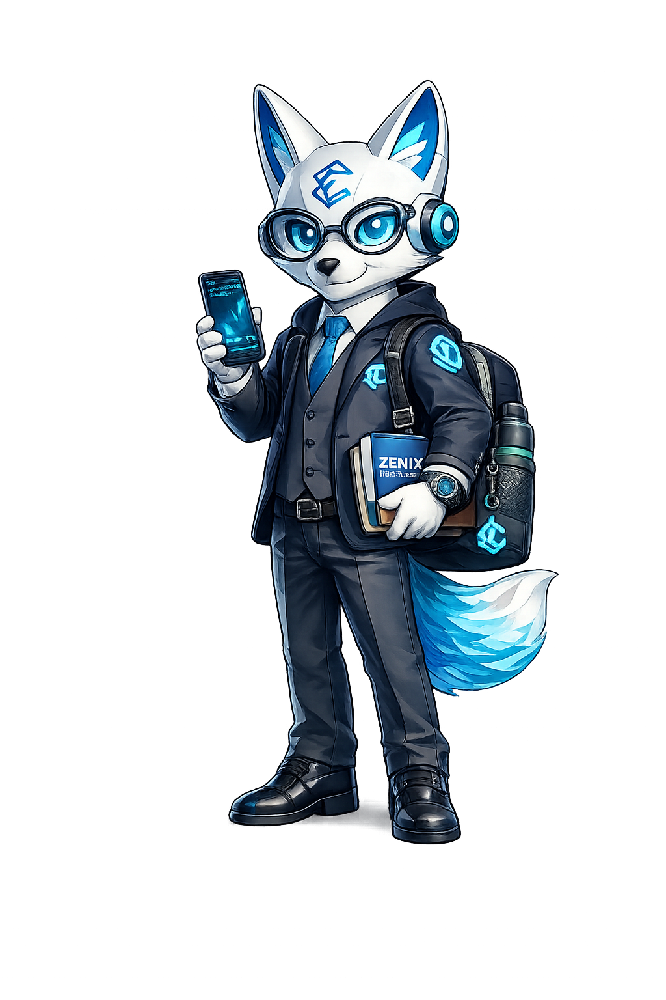

Deja que la tecnología trabaje por ti. Recibe señales profesionales en tiempo real o deja que nuestro bot opere tu cuenta automáticamente — sin necesidad de saber programar.
Tres pasos para que el bot empiece a trabajar por ti.
Selecciona el servicio que necesitas: bot de señales, bot de ejecución automática, o ambos. Activa tu suscripción mensual desde tu panel de usuario.
Con la suscripción activa, accede a tu panel web con tu cuenta de Eprocash. Para el bot de ejecución, conectas tu cuenta de bróker — nada más.
Recibe señales en tu canal VIP de Telegram y en tu panel, o deja que el bot ejecute operaciones automáticamente en tu cuenta mientras tú haces tu vida.
Cada módulo es independiente — puedes contratar uno o combinarlos.
Recibe alertas de trading en tiempo real en tu canal VIP de Telegram y en tu panel web. Sin necesidad de saber analizar mercados.
El bot opera directamente en tu cuenta de MetaTrader 5. Tú solo provees el acceso a tu bróker — el resto lo hace el sistema.
Sistema interno de Eprocash que garantiza que los bots estén funcionando 24/7. Incluido en toda suscripción activa — sin costo adicional.
Es un servicio de suscripción mensual que te da acceso a señales de trading generadas automáticamente por nuestro sistema. El bot analiza cuatro mercados en tiempo real — EUR/USD, BTC/USD, WTI (petróleo) y XAU/USD (oro) — y cuando detecta una oportunidad, te avisa al instante.
No. Este es un servicio llave en mano. Tú recibes la señal y decides si operas o no — el sistema técnico es 100% responsabilidad de Eprocash.
Cada señal incluye la información necesaria para que puedas abrir la operación en tu bróker en menos de un minuto, sin necesidad de analizar el gráfico tú mismo.
No. Ningún sistema de señales puede garantizar ganancias. El trading siempre conlleva riesgo de pérdida. Las señales son herramientas de apoyo basadas en análisis técnico, pero el mercado puede moverse en cualquier dirección.
La cantidad varía según las condiciones del mercado. El sistema solo genera una señal cuando detecta una configuración válida — no fuerza operaciones cuando el mercado no las justifica.
Sí. Recibes las señales en Telegram (disponible en móvil y PC) y en tu panel web. Para ejecutar la operación, necesitas la app de tu bróker en el móvil o acceso a su plataforma web.
Puedes abrir una cuenta desde nuestra sección de Plataformas. Te recomendamos XM para Forex (mínimo $5 de depósito) o Binance para cripto. Una vez activa, ya puedes operar las señales.
Desde tu panel de usuario en Eprocash Academy podrás ver el estado de tu suscripción, la fecha de vencimiento y renovarla. Si la suscripción vence, el acceso al canal VIP y al panel se suspende hasta renovar.
Es el paso siguiente al bot de señales. En vez de avisarte para que tú ejecutes la operación, este servicio opera directamente en tu cuenta de MetaTrader 5 de forma automática — sin que tengas que abrir el gráfico ni presionar ningún botón.
Tú contratas la suscripción, conectas tu cuenta de bróker MT5 y el sistema de Eprocash se encarga del resto. El código del bot nunca se comparte — es un servicio gestionado completamente por Eprocash, igual que cuando contratas cualquier otro servicio profesional.
El bot de ejecución está actualmente en validación con cuenta demo. Se habilitará para suscriptores una vez completado el proceso de backtesting necesario para garantizar la robustez del sistema antes de operar con dinero real.
No necesitas tener el ordenador encendido ni MetaTrader abierto para que el bot funcione. Trabaja de forma independiente en el servidor de Eprocash.
No. El sistema solo tiene permisos para abrir y cerrar operaciones en tu cuenta. No tiene acceso a retiros ni transferencias. Tu dinero permanece en tu cuenta de bróker en todo momento.
Sí. Puedes pausar o cancelar el servicio desde tu panel. Al cancelar, el bot deja de operar en tu cuenta y puedes gestionar tus posiciones manualmente desde ese momento.
Está en validación con cuenta demo actualmente. No damos fechas fijas para no hacer promesas que no podamos cumplir. El progreso se comunica en el canal de Telegram — únete para enterarte cuando se lance.
Sí. Como cualquier sistema de trading, existe riesgo de pérdida. El bot opera con reglas de gestión de riesgo definidas, pero el mercado puede moverse en contra. Opera solo con capital que puedas permitirte perder.
El bot monitor es el sistema de vigilancia interno de Eprocash. Su función es asegurarse de que los otros dos bots (señales y ejecución) estén funcionando correctamente en todo momento, y actuar de inmediato si algo falla.
No. El bot monitor es infraestructura interna de Eprocash. No es un producto que configures o instales — funciona en segundo plano de forma transparente para garantizar la calidad de tu servicio. Está incluido sin costo adicional en toda suscripción activa.
El equipo de Eprocash recibe una alerta inmediata y actúa para restablecer el servicio. El objetivo es que cualquier interrupción se resuelva en el menor tiempo posible, sin que tengas que hacer nada.
Ninguno. El bot monitor opera completamente del lado de Eprocash. Como suscriptor, lo único que necesitas es mantener tu suscripción activa — el resto es responsabilidad del equipo técnico de Eprocash.
Si hay una interrupción que afecte tu servicio, te comunicaremos por el canal oficial de Telegram. El objetivo siempre es restablecer el servicio antes de que notes la diferencia.
En el caso del bot de señales, tú eres quien ejecuta las operaciones en tu bróker — si el bot falla, simplemente dejan de llegar nuevas señales, pero tus posiciones abiertas no se ven afectadas. En el caso del bot de ejecución (cuando esté disponible), el protocolo de fallo seguro se definirá antes del lanzamiento.

Crea tu cuenta en Eprocash Academy, activa tu plan y empieza a recibir señales profesionales hoy mismo. Para el bot de ejecución, únete al canal de Telegram para saber cuándo se lanza.